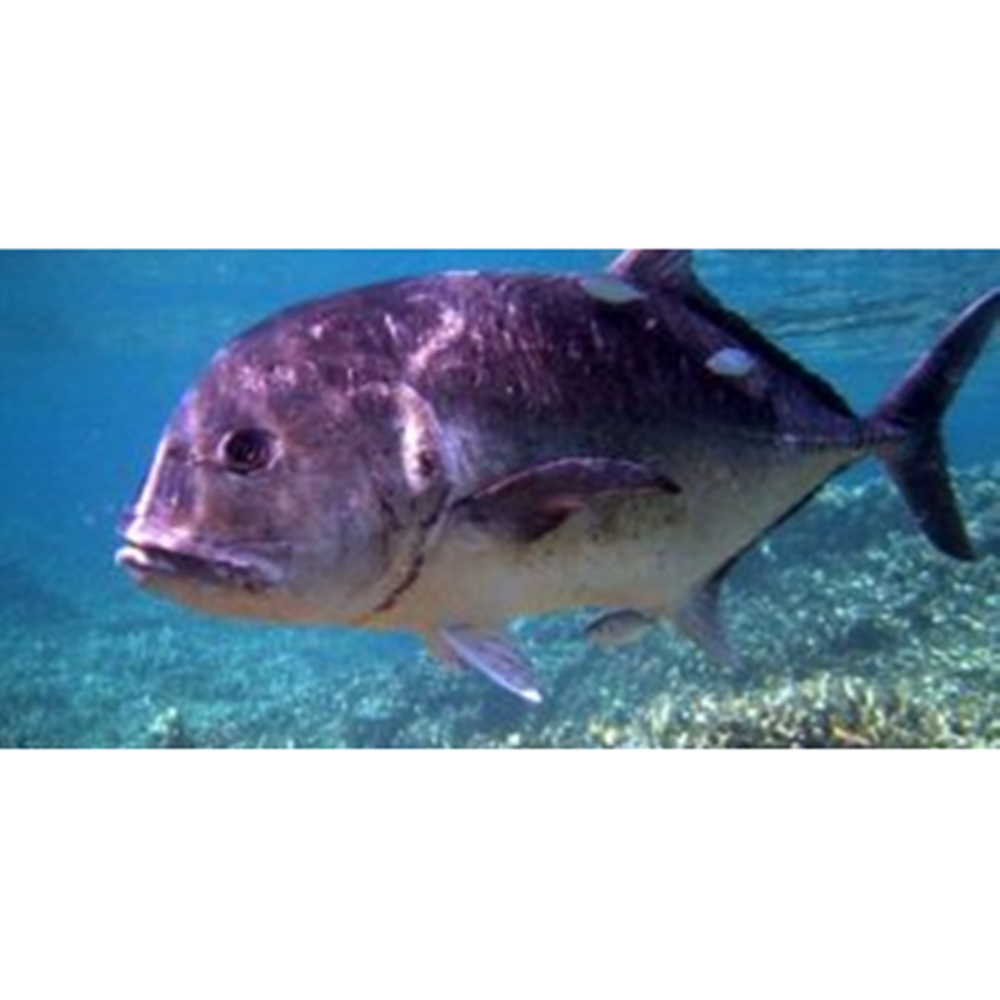

Ikan Kuwe
Ikan kuwe adalah jenis ikan laut yang memiliki karakteristik unik yaitu: mereka senang bergerombol dan bercengkerama dengan sesamanya. Kuwe tergolong jenis ikan karnivora yang bila dipancing harus menggunakan ikan lain seperti misalnya ikan bandeng. Ikan ini suka bersembunyi di antara karang-karang besar, maka apabila anda ingin memancing ikan ini sebaiknya Anda dekati terumbu karang yang besar.
Ikan kuwe memiliki banyak manfaat untuk kesehatan salah satunya adalah membuat kulit menjadi sehat halus. Memicu wajah jadi putih bersinar karena kandungan vitamin D pada ikan ini sangat banyak. Serta mengandung vitamin C dan vitamin A. Tentu saja itu merupakan multivitamin yang sangat berguna untuk kulit.
Kandungan Ikan Kuwe (dalam 100 gram)
| Protein (g) | Kalori (Kal) | Lemak (g) | Besi (mg) | Kalsium (mg) | Fosfor (mg) | Vit A (SI) | Vit B1 (mg) | Kolesterol (mg) | BDD (%) |
|---|---|---|---|---|---|---|---|---|---|
| 13 | 74 | 2 | 0,3 | - | - | - | - | 50 | 100 |
Manfaat Ikan Kuwe
- Mengobati Radang Kulit
- Meningkatkan Daya Ingat
- Penghasil Energi Tubuh
- Membantu Pembentukan Sel Jaringan Tubuh
- Menjadikan Rambut Sehat dan Kuat
Radang kulit bisa dialami oleh siapa saja tidak memandang strata. Radang ini terjadi bisa karena virus bakteri maupun radiasi. Untuk menyembuhkannya biasanya dokter meresepkan obat kortikosteroid. Namun anda perlu waspada pada obat ini karena bila dipakai secara berkesinambungan dalam waktu lama bisa menyebabkan pembengkakan pada tubuh. Selain itu juga bisa menumbuhkan jerawat di wajah. Tentu anda tidak mau kan menerima resiko buruk ini. Maka dari itu makan saja ikan kuwe karena ikan ini memang memiliki fungsi sebagai anti inflamasi.
Khasiat ikan kuwe selanjutnya adalah meningkatkan daya ingat. Ikan ini dapat merangsang langsung sistem saraf pusat, sehingga bergerak secara aktif. Bila anda memakannya, maka akan berpengaruh pada kinerja otak dalam memproses data dan menyimpan data. Anda menjadi lebih mudah mengingat hal.
Sebagian zat yang ada pada ikan kuwe, akan diolah dalam sistem pencernaan dan sebagai penghasil energi tubuh yang kemudian membantu manusia untuk bisa melakukan berbagai kegiatannya sehari-hari, supaya tidak lemah, letih serta lesu. Zat pembentuk pembentuk itu antaralain ada karbohidrat, protein dan juga lemak.
Gizi ikan kuwe yang yang membantu pembentukan sel jaringan tubuh adalah mineral dan protein. Kandungan tersebut secara bersama-sama diproses oleh organ tubuh sampai terbentuk sel jaringan baru terutama sebagai pengganti yang sudah rusak atau tidak berfungsi lagi.
Agar rambut sehat dan kuat, makanlah makanan yang banyak mengandung zat besi, seperti ikan kuwe paling tidak dua kali dalam satu minggu. Untuk memaksimalkan penyerapan kandungan tersebut terhadap tubuh, dikombinasikan juga dengan memakan buah-buahan.